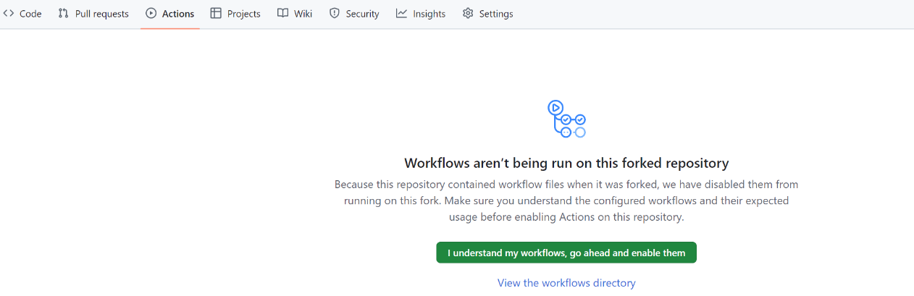
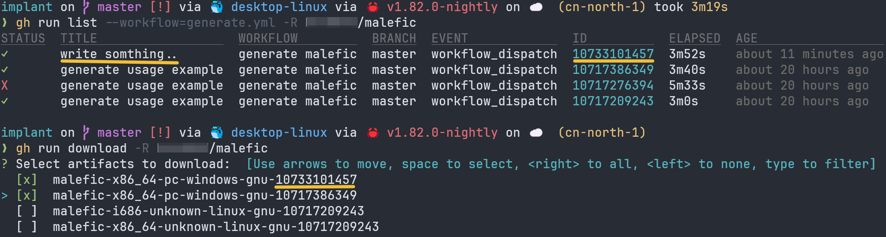
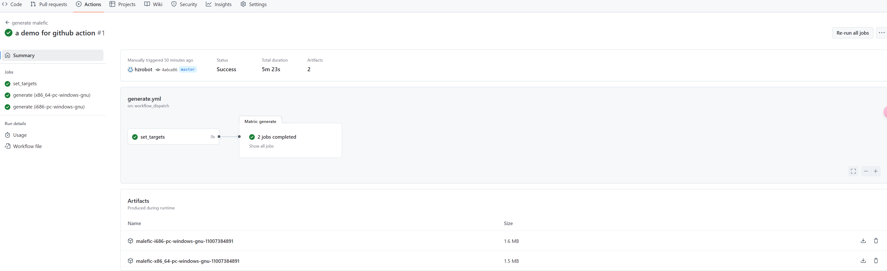
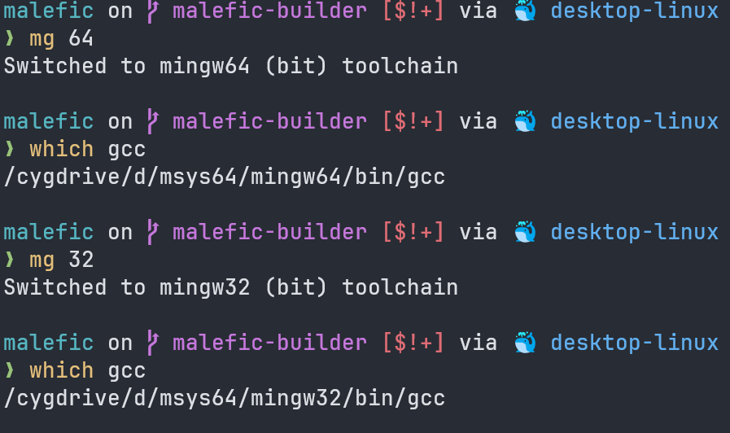

Implant¶
考虑到红队人员的使用习惯， 本 Implant 所支持的命令将大量沿用 CS 工具的命令及使用习惯.
欢迎各位对想要的功能和使用中遇到的问题提 issues 🙋
Build¶
rust自动化编译方案
rust很复杂，不通过交叉编译的方式几乎无法实现所有架构的适配，所以我们参考了cross-rs/cross的方案，但它并不完美的符合我们的需求：
- cross需要宿主机存在一个rust开发环境，编译环境不够干净，虽然这可以通过虚拟机、github action等方式解决
- cross对很多操作进行了封装，不够灵活，比如一些动态的变量引入、一些复杂的操作无法方便的实现
因此，我们参考了cross创建了用于维护malefic(即implant)编译的仓库chainreactors/cross-rust. 这个项目提供了一些主流架构的编译环境。同时考虑到灵活性我们放弃了make改用了具有强大功能的cargo-make来管理编译任务.
目前支持的架构¶
malefic理论上支持rust能编译的几乎所有平台, 包括各种冷门架构的IoT设备, Android系统, iOS系统等等 (有相关需求可以联系我们定制化适配), 当前支持的架构可参考cross-rust
环境准备¶
环境安装需要cargo-make和docker
cargo-make install¶
有两种安装方式，一种是通过cargo安装，另一种是下载release版本的二进制文件
-
cargo安装
cargo install --force cargo-make -
二进制文件安装
没有cargo环境的情况下，你可以直接下载release版本的二进制文件，然后添加到PATH环境变量中 release链接: https://github.com/sagiegurari/cargo-make/releases
此方式，你需要把makers.exe和cargo-make.exe添加到PATH环境变量中，后续说明中的所有cargo make操作替换为等价的makers即可，如：
cargo make local windows-x64-gnu
#等价于
makers local windows-x64-gnu
docker install¶
此处省略，可参考官网介绍
git clone¶
git clone --recurse-submodules https://github.com/chainreactors/malefic
注意clone子项目
需要添加--recurse-submodules递归克隆子项目. 如果已经clone也不必担心,git submodule update --init 即可
名称映射
安装好上述环境后，你即可通过cargo-make来编译impalnt，所有编译流程通过Makefile.toml进行了定义。
为了方便build，我们做了短名称映射，后续所有操作都可以用“短名称”或“target原始值”，完整映射如下：
"windows-x64-msvc" = "x86_64-pc-windows-msvc"
"windows-x32-msvc" = "i686-pc-windows-msvc"
"windows-x64-gnu" = "x86_64-pc-windows-gnu"
"windows-x32-gnu" = "i686-pc-windows-gnu"
"linux-x64-gnu" = "x86_64-unknown-linux-gnu"
"linux-x32-gnu" = "i686-unknown-linux-gnu"
"darwin-x64" = "x86_64-apple-darwin"
"darwin-arm" = "aarch64-apple-darwin"
Docker编译(推荐)¶
在docker中编译环境更加干净，编译使用了volume挂载源码，所以编译完成后依然会在target目录下生成对应的可执行文件。
编译单个target¶
cargo make
cargo make docker windows-x64-gnu
cargo make docker x86_64-pc-windows-gnu
makers同理
makers docker windows-x64-gnu
makers docker x86_64-pc-windows-gnu
编译多个target¶
参考如下命令, 通过空格分隔多个target，你可按照自己习惯使用短名称或者target原值
cargo make docker windows-x64-gnu windows-x64-msvc windows-x32-gnu linux-x64-gnu linux-x32-gnu
编译所有target¶
cargo make docker all
Github Action编译(推荐)¶
1. enable action¶
fork https://github.com/chainreactors/malefic 仓库
需要在仓库中打开action，否则会出现workflow not found的问题

)2. gh install¶
安装gh cli参考: https://docs.github.com/zh/github-cli/github-cli/quickstart
3. gh login¶
你可以使用gh登录github，有两种方式，一种是交互式登录，另一种是使用token登录
-
交互式登录
gh auth login -
使用token登录
windows: $ENV:GH_TOKEN="your_authentication" linux: export GH_TOKEN="your_authentication"
注：此方式需要在https://github.com/settings/tokens配置一个有workflow权限的token
4. Compile via action¶
配置完所需要的config.yaml配置后, 你可以通过gh来运行编译工作流，参考命令如下
gh workflow run generate.yml -f malefic_config=$(base64 -w 0 </path/to/config.yaml>) -f remark="write somthing.." -f targets="windows-x64-gnu,windows-x32-gnu" -R <username/malefic>
tips: windows需要添加wsl的path才可使用base64,参考如下
$env:Path = -join ("/usr/bin;","$env:Path")
5. 查看编译进度¶
gh run list -R <username/malefic>
6.download artifact¶
填写的remark和run_id可以帮你找到对应的artifact(由于账户的大小限制,artifact默认保留时间为3天,防止仓库容量不够用，你可自行更改retention-days)
- 通过gh下载
gh run download -R <username/malefic>

- 通过浏览器下载 当然，你也可以通过浏览器直接在对应的action中的summary部分下载.

保护敏感信息
我们对config进行add-mask处理,保护config.yaml的敏感数据，但是输出的log、artifact、release仍会暴露或多或少的信息, 使用时建议创建一份private的malefic再使用。
windows-tips¶
没有wsl, 你可以通过notepad $PROFILE自定义一条base64函数即可
gh workflow run generate.yml -f malefic_config=$(base64 </path/to/config.yaml>) -f remark="write somthing.." -f targets="windows-x64-gnu,windows-x32-gnu" -R <username/malefic>
function base64 {
[CmdletBinding()]
param(
[Parameter(Mandatory, ValueFromPipeline, ValueFromPipelineByPropertyName)]
[string] $s,
[switch] $decode,
[switch] $binary
)
process {
Set-StrictMode -Version Latest
$ErrorActionPreference = 'Stop'
if ($decode) {
if ($s.Length -le 320 -and (Test-Path $s -PathType Leaf)) {
$encodedContent = Get-Content $s -Raw
}
else {
$encodedContent = $s
}
if ($binary) {
[System.Convert]::FromBase64String($encodedContent)
}
else {
[System.Text.Encoding]::utf8.GetString([System.Convert]::FromBase64String($encodedContent))
}
}
else {
if ($s.Length -le 320 -and (Test-Path $s -PathType Leaf)) {
$str = Get-Content $s -AsByteStream
$code = [System.Convert]::ToBase64String($str)
}
else {
$code = [System.Convert]::ToBase64String([System.Text.Encoding]::utf8.GetBytes($s))
}
$code
}
}
}
本地编译¶
由于本地环境的限制，所以任务里只提供单个target的编译任务，如果需要交叉编译请使用Docker编译.
以x86_64-pc-windows-gnu/msvc为例，
cargo make可以通过如下命令来编译。
# 任务名称做了兼容既可以用短名称也可使用target原值，所以如下两个命令等价
cargo make local windows-x64-gnu # 短名称
cargo make local x86_64-pc-windows-gnu # target名称
# 同理，如下两个命令等价
cargo make local windows-x64-msvc
cargo make local x86_64-pc-windows-msvc
makers local windows-x64-gnu
makers local x86_64-pc-windows-gnu
手动编译malefic¶
项目的配置(config.toml、cargo.toml、makefile.toml..)中提供了一些预设和编译优化选项. 熟悉rust的使用者也可以手动编译，malefic目前使用的rust版本是nightly-2024-08-16.
添加对应的目标编译架构,以x86_64-pc-windows-gnu为例
rustup target add x86_64-pc-windows-gnu
# mg 64
cargo build --release -p malefic --target x86_64-pc-windows-gnu
# mg 32
cargo build --release -p malefic --target i686-pc-windows-gnu
其他¶
手动编译注意¶
本地手动编译时，我们推荐windows用户使用msys2管理GNU工具链环境, 可通过官网二进制文件直接安装。
在msys2的terminal下执行如下安装可以保证64、32位GNU工具链的正常编译
pacman -Syy # 更新包列表
pacman -S --needed mingw-w64-x86_64-gcc
pacman -S --needed mingw-w64-i686-gcc
你可自行把msys64添加到环境变量中， 也可通过notepad $PROFILE将如下内容添加到powershell配置中，实现在powershell中快速切换mingw64/32.
function mg {
param (
[ValidateSet("32", "64")]
[string]$arch = "64"
)
$basePath = "D:\msys64\mingw" # 此处是你的msys2安装路径
$env:PATH = "${basePath}${arch}\bin;" + $env:PATH
Write-Host "Switched to mingw${arch} (bit) toolchain"
}
mg 64

编译独立modules¶
malefic的windows平台目前支持动态加载module, 因此可以编译单个或者一组module, 然后通过load_module给已上线的implant添加新的功能.
load_module使用文档 load_module相关介绍
makefile指令如下
cargo make --env MOUDLES_FEATURES="execute_powershell execute_assembly" module
cargo build --release --features "execute_powershell execute_assembly" -p malefic-modules --target x86_64-pc-windows-gnu
所有支持的feautres
请见 https://github.com/chainreactors/malefic/blob/master/malefic-modules/Cargo.toml
fs_ls = ["fs"]
fs_cd = ["fs"]
fs_rm = ["fs"]
fs_cp = ["fs"]
fs_mv = ["fs"]
fs_pwd = ["fs"]
fs_mem = ["fs"]
fs_mkdir = ["fs"]
fs_chmod = ["fs"]
fs_cat = ["fs"]
sys_info = ["sys"]
sys_ps = ["sys"]
sys_id = ["sys"]
sys_env = ["sys"]
sys_whoami = ["sys"]
sys_exec = ["sys"]
sys_kill = ["sys"]
sys_execute_shellcode = ["sys"]
sys_execute_assembly = ["sys"]
sys_execute_bof = ["sys"]
sys_execute_pe = ["sys"]
sys_execute_powershell = ["sys"]
sys_netstat = ["sys"]
net_upload = ["net"]
net_download = ["net"]
编译结果为target\[arch]\release\modules.dll
可以使用load_module热加载这个dll
module动态加载目前只支持windows
linux与mac在理论上也可以实现
常见的使用场景:
- 编译一个不带任何modules的malefic, 保持静态文件最小特征与最小体积. 通过
load_module modules.dll动态加载模块 - 根据场景快速开发module, 然后动态加载到malefic中.
- 长时间保持静默的场景可以卸载所有的modules, 并进入到sleepmask的堆加密状态. 等需要操作时重新加载modules
Config¶
Implant 拥有 config.yaml 以对生成的 implant 进行配置：
会在编译时通过malefic-config 自动解析各种feature与参数配置.
Server¶
与server通讯相关的配置.
-
Server字段包含了以下连接配置:-
urls:implant所需要建立连接的目标ip:port或url:port列表 -
protocol:implant所使用的传输协议 -
tls:implant是否需要使用tls -
interval: 每次建立连接的时间间隔(单位为milliseconds) -
jitter: 每次建立连接时的时间间隔抖动(单位为milliseconds) -
ca: 所使用的证书路径
-
implants¶
implant端各种opsec与高级特性的配置. 在community中带🔒表示配置不生效.
Implant 字段包含以下可选生成物配置：
modules: 生成物所需要包含的功能模块， 如默认提供的base基础模块及full全功能模块， 或自行组装所需功能模块, 详见章节Extension部分
metadata¶
metadata: 生成物元特征：remap_path: 编译绝对路径信息iconfile_versionproduct_versioncompany_nameproduct_nameoriginal_filenamefile_descriptioninternal_name
Module¶
module是implant中功能的基本单元, 各种拓展能力(bof,pe,dll)的执行也依赖于module实现.
已实现modules¶
请见: https://github.com/chainreactors/malefic/blob/master/malefic-modules/Cargo.toml#L24-L58
Professional Features 🔒¶
部分module需要依赖各类kits中的高级特性, 在community中只提供了默认特征的版本.
| 目标系统 | 目标架构 | sleep_mask | obfstr | fork&run | thread_stack_spoof | syscall | dynamic_api |
|---|---|---|---|---|---|---|---|
| windows | x86 | ✗ | ✓ | ✓ | ✓ | ✓ | ✓ |
| x86_64 | ✓ | ✓ | ✓ | ✓ | ✓ | ✓ | |
| arm/aarch64 | ✗ | ✓ | ✓ | ✓ | ✗ | ✓ | |
| linux | intel | ✗ | ✓ | ✗ | ✗ | ✗ | ✗ |
| arm | ✗ | ✓ | ✗ | ✗ | ✗ | ✗ | |
| mips | ✗ | ✓ | ✗ | ✗ | ✗ | ✗ | |
| macOS | intel | ✗ | ✓ | ✗ | ✗ | ✗ | ✗ |
| arm | ✗ | ✓ | ✗ | ✗ | ✗ | ✗ |
Dynamic Module¶
malefic的设计理念之一就是模块化, 自由组装. modules部分的设计也提现了这个理念.
通过rust自带的features相关功能, 可以控制编译过程中的模块组装. 目前提供了三种预设
modules预设
full = [
"fs_ls",
"fs_cd",
"fs_rm",
"fs_cp",
"fs_mv",
"fs_pwd",
"fs_mem",
"fs_mkdir",
"fs_chmod",
"fs_cat",
"net_upload",
"net_download",
"sys_info",
"sys_exec",
"sys_execute_shellcode",
"sys_execute_assembly",
"sys_execute_powershell",
"sys_execute_bof",
"sys_execute_pe",
"sys_env",
"sys_kill",
"sys_whoami",
"sys_ps",
"sys_netstat",
]
base = [
"fs_ls",
"fs_cd",
"fs_rm",
"fs_cp",
"fs_mv",
"fs_pwd",
"fs_cat",
"net_upload",
"net_download",
"sys_exec",
"sys_env",
]
extend = [
"sys_kill",
"sys_whoami",
"sys_ps",
"sys_netstat",
"sys_execute_bof",
"sys_execute_shellcode",
"sys_execute_assembly",
"fs_mkdir",
"fs_chmod",
]
当然也可以根据喜好自行组装功能模块， 当然， 我们也提供了动态加载及卸载模块的功能， 可以随时添加新模块.
编译时组装的模块无法被卸载
这里有一个好消息与一个坏消息. 坏消息是编译时组装的模块无法被卸载, 因此请根据自己的使用场景选择合适的预设. 好消息是虽然无法卸载, 但加载新模块时如选用了同样名称的模块, 新模块将覆盖本体的模块.(在内存中原本的模块依旧会存在)
module定义¶
模块的开发者绝大多数场景下不需要关注除了run之外的方法. 开发自定义模块请见文档
#[async_trait]
pub trait Module {
fn name() -> &'static str where Self: Sized;
fn new() -> Self where Self: Sized;
fn new_instance(&self) -> Box<MaleficModule>;
async fn run(&mut self,
id: u32,
receiver: &mut crate::Input,
sender: &mut crate::Output) -> Result
module管理¶
就像开始所说的那样， malefic 支持编译时组装所需功能模块， 同时也支持启动后动态的加载和卸载所需的功能模块. 我们提供了一组api用来管理模块. 具体的使用请见使用文档module部分
list_modules命令允许列举当前Implant所持有的模块load_modules命令则支持动态加载本地新组装的模块， 只需要load_modules --name xxx --path module.dll即可动态加载新的模块， 请注意， 如本体已经含有的模块（生成时组装的模块）， 再次加载将会覆盖该模块的功能， 是的，load_modules允许覆盖本体功能unload_modules🛠️ 命令则会卸载使用load_modules命令所加载的对应name的模块， 请注意， 生成时确定的模块是无法卸载的， 但这些模块可以被加载的新模块所覆盖refresh_modules🛠️ 命令将会卸载所有动态加载的模块， 包括覆盖掉的本体模块， 一切模块将恢复成编译时的初始状态
Windows Kit¶
关于 Windows 平台特有功能， 可以查阅 win_kit